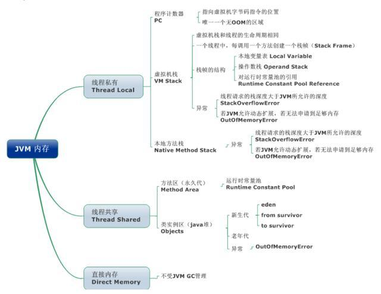
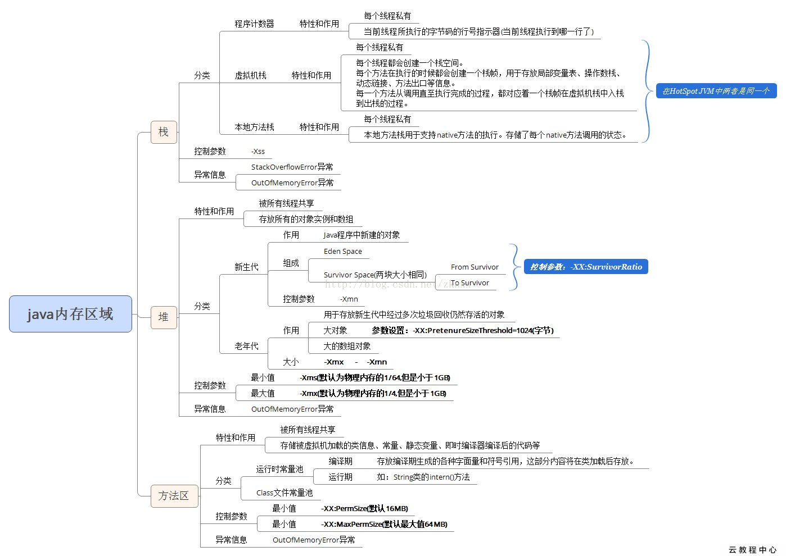
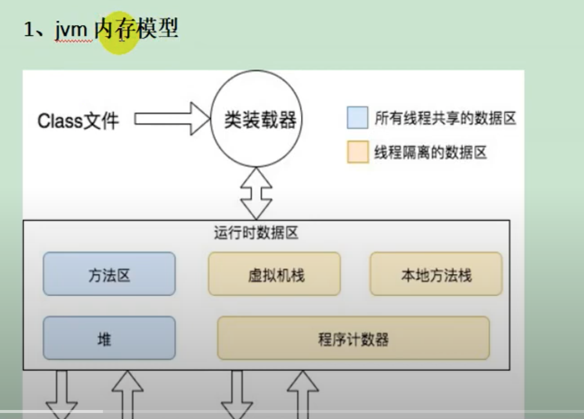
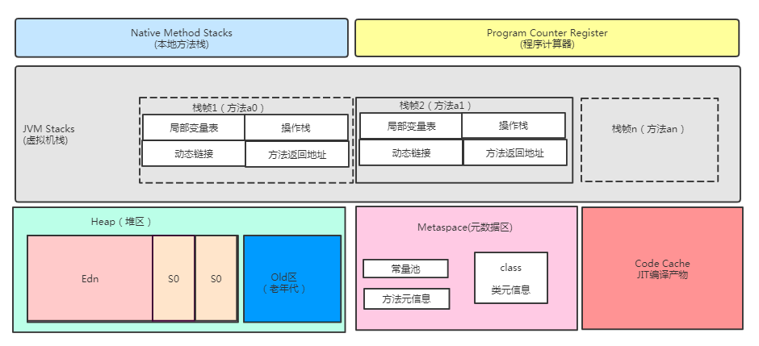
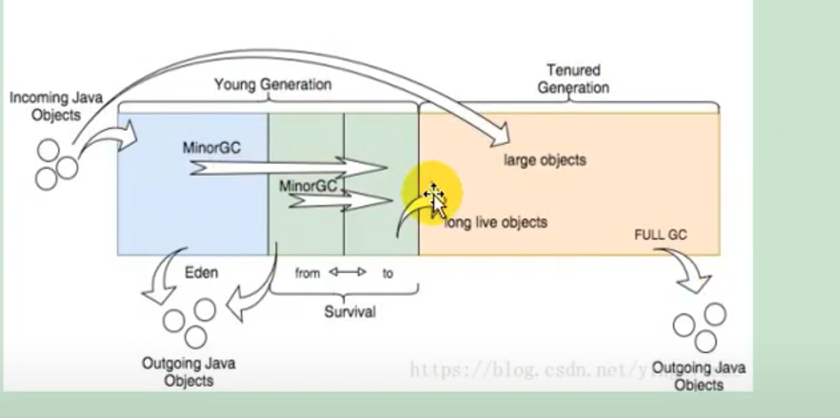
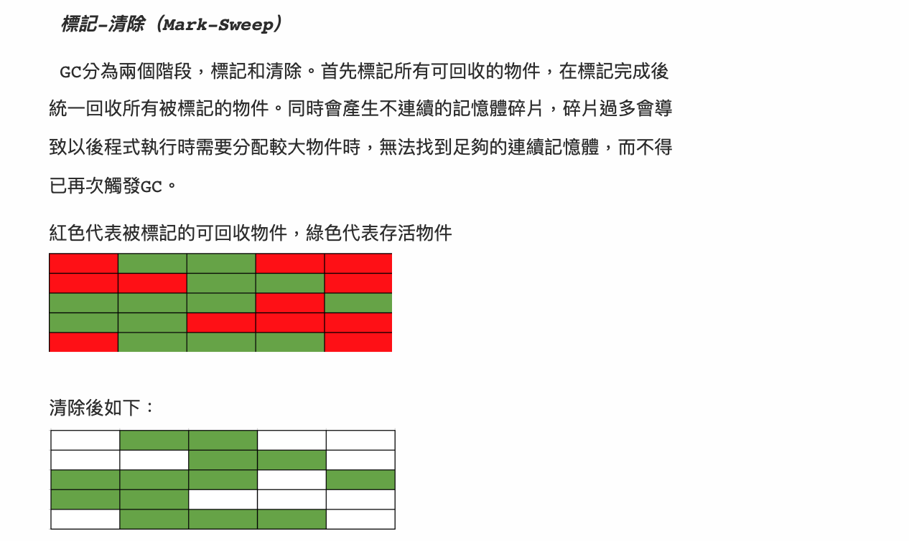
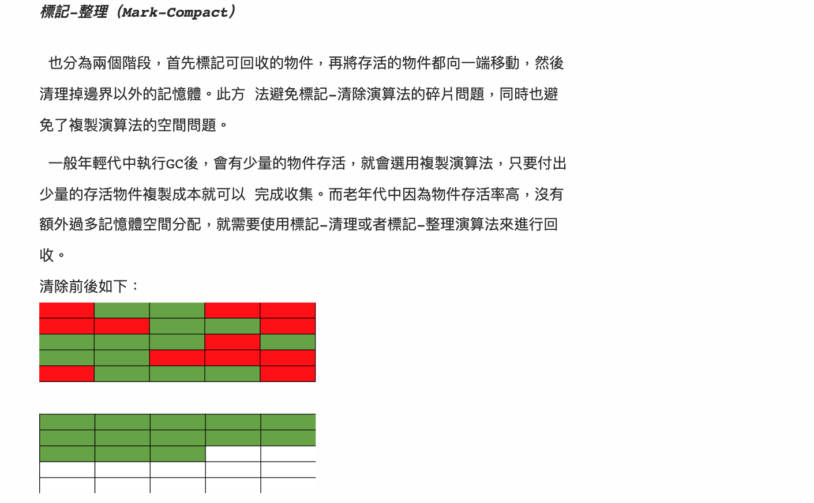
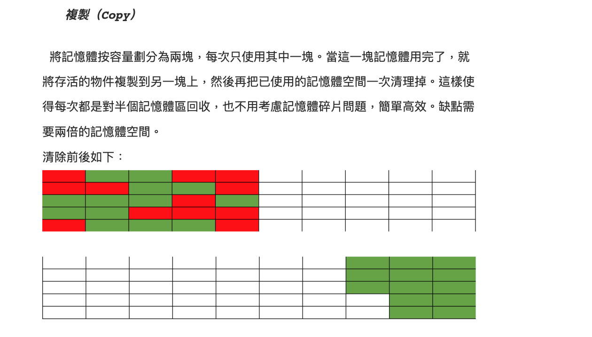
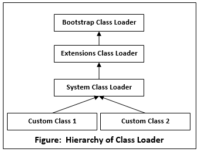
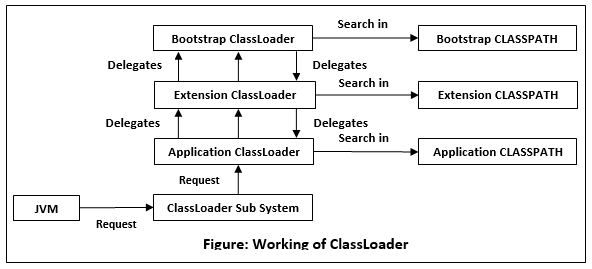

Jvm
Last updated: Feb 23, 2024Table of Contents
- 1) JVM internal storage ?
- 2) Difference between JVM heap, stack ?
- 3) Explain JVM GC ? GC strategy ? algorithm ?
- 3’) Explain GC’s ”stop-the-world” ?
- 3’') Explain type of GC collector ?
- 4) how to get memory in java program, heap usage percentage (%) ?
- 5) Explain classLoader ?
- 6) Explain memory leakage ?
- 7) does memory leakage happen in java ? how ?
- 8) Difference between Serial and Parallel GC ?
- 9) Thread, progress, program ?
- 10) Explain JVM reflection ? dynamic proxy ?
- 11) Explain JVM instance creation steps ?
- 12) Explain JVM instance life cycle ?
- 13) Explain JVM instance structure ?
- 14) Common JVM command ?
- 15) Common JVM tune command ?
- 16) Common JVM tune parameter ?
- 17) What’s int length in 64 bit JVM ?
- 18) Difference between WeakReference and SoftReference and PhantomReference ?
- 19) Explain -XX:+UseCompressedOops ?
- 20) What’s max heap storage in 32 bit JVM and 64 bit JVM ?
- 21) Difference between JRE, JDK and JIT ?
- Ref
JVM FAQ
1) JVM internal storage ?
- JVM internal storage
part 1) Thread local- program counter :
- (no OutOfMemoryError), every thread has its own counter
- VM stack (
thread stack)- serves for java method
- will create a
stack framewhen every method run. - stack frame storges :
local var, op stack, Dynamic Linking, method returned val, Dispatch Exception ... - each method from
called -> completedmapping the process :push-to-stack -> pop-from-stack(no matter method runs success or not) - stack frame : storage intermedia/result information.
- native method stack
- serves for native method
- program counter :
part 2) Thread shared- java heap
- method area (Non-heap memory)
part 3) Direct memory (not managed by JVM GC)



- Ref
2) Difference between JVM heap, stack ?
- JVM
stack- storage stack frame, local var
- smaller than heap in general
- NOT shared by different threads. used by local thread only
- JVM
heap- storage class
- shared by all threads in JVM
- Ref
3) Explain JVM GC ? GC strategy ? algorithm ?
-

-
5W1H
- Where ?
- JVM heap
- Why ?
- prevent
memory leakage. in order to use memory efficiently
- prevent
- What ?
- GC “recycle” object which NOT used anymore
- When ?
- Reference counting : remove when “reference count = 0”. But NOT working when “cyclic reference”
- Tracing : tranverse (“dependence tree”) from GC root, if not in visited list, means not used, then remove them
- Escape analysis
- HOW ? (GC remove algorithm)
-
Mark-Sweep- mark the to-clean area
- pros:
- easy understand, implement
- cons:
- low efficiency
- will cause “space fragments” -> hard to maintain the “continuous storage space”

-
Mark-Compact- mark the to-clean area, merge/move them altogether, then clean
- pros:
- can keep “continuous storage space”
- cons:
- spend extra time/resource on “merge/move” op

- spend extra time/resource on “merge/move” op
-
Mark-Copy- split memory space to 50%, 50%. Only use 50% each time, move “to-clean instance” to the other 50% when clean
- pros:
- fast, easy to implement, not cause “space fragments”
- cons:
- Only 50% of memory space can be used everytime
- will cause more frequent GC

-
Generation collection- implement above algorithm to young, old generation seperately
- after Java 1.3
- mechanisms:
- step 1) new instances storaged in Young Generation, when it’s full, will trigger minor GC
- step 2) move survived instances to FromSpace (survivor 0).
- step 3) when FromSpace full, trigger minor GC
- step 4) move survived instances to ToSpace (survivor 1).
- …
- step 5) move still-survived instances to Old Generation
- Young Generation
- (Eden：FromSpace：ToSpace = 8:1:1 by default)
- “minor GC”
- Eden : storage “new” instances
- Survivor
- FromSpace (Survivor0)
- ToSpace (Survivor1) :
- continuous memory
- Old Generation
- Old Space : storage “long life cycle” instances
- “major GC”
- permanent generation
- AKA “method area”. (after Java 8, this space moved to “MetaSpace”, not use JVM memory anymore, but local memory)
- storage class, string…
- there is also GC here. “major GC”
-
- Where ?
-
properties:
- GC process is a
local priority,independentthread - JVM GC is an automatic mechanism. we can also manually trigger it :
System.gc();(but NOT recommended)
- GC process is a
-
Ref
3’) Explain GC’s ”stop-the-world” ?
3’') Explain type of GC collector ?
- Serial collector
- will cause “stop-the-world”
- only ONE thread
- Parallel collector
- will cause “stop-the-world”
- can have MUTI thread
- Parallel Old collector
- Parnew collector
- CMS collector
- G1 collector
- Ref
4) how to get memory in java program, heap usage percentage (%) ?
java.lang.Runtime: get remaining memory, all memory, max heap memoryRuntime.freeMemory(): get remain memory in binaryRuntime.totalMemory(): get total memory in binaryRuntime.maxMemory(): get max memory in binary
5) Explain classLoader ?
- Implemented by
ClassLoaderclass (and its sub class) - Load
.classfiles to JVM - Steps:
- Bootstrap class loader -> ExtClassLoader -> AppClassLoader (loader step)
- Tyeps
BootstrapClassLoader- implemented by c/c++. we CAN’T access them (but they do exist!).
- load core java classes under
JAVA_HOME/jre/lib(jre path) (defined bysun.boot.class.path) - run after JVM launch
- ExtensionClassLoader
- we can access them (but seldom do that)
- load jar class under
JAVA_HOME/lib/ext(defined byjava.ext.dirs) - run after Bootstrap class loader
- AppClassLoader
- load classes in application, e.g. test class, 3rd party class…
- load jar under
Classpath(defined byjava.class.path) or-cpor-classpath - run after ExtClassLoader
User defined classLoader- TODO
- Steps (inside classLoader):
- load -> connect -> class init
- Explain:
- load:
- load
.classfile to memory (create a binary array read .class), and create the corresponding class instance
- load
- connect
- validate, prepare, and extract/load are included.
- validate : check if loaded class will “harm” JVM
- prepare : give default init val to static val.
- extract : modify “sign reference” to “direct reference”
- class init:
- if there is parent class which is not init yet -> init this parent class first
- init “init code” in class in order

- load:
- Important methods
- loadClass() : load target class, will check if current ClassLoader or its parent already have it. If not, will call findClass()
- findClass() : can load user-defined class
- defineClass() : when findClass() get class, defineClass() will transfrom such class to .class instance
- Pics


- Ref
- https://www.baeldung.com/java-classloaders
- https://www.javatpoint.com/classloader-in-java
- https://juejin.cn/post/6844904005580111879
- https://blog.csdn.net/briblue/article/details/54973413
- https://kknews.cc/zh-tw/code/8zvokbq.html
- https://kknews.cc/tech/34pn9ba.html
- https://openhome.cc/Gossip/JavaGossip-V2/IntroduceClassLoader.htm#:~:text=Bootstrap Loader是由C,lib%2Fext 目錄下的
- https://www.youtube.com/watch?v=oHM_fVXnPTE&list=PLmOn9nNkQxJH0qBIrtV6otI0Ep4o2q67A&index=660
6) Explain memory leakage ?
- http://cloudtu.github.io/blog/2011/12/java-memory-leak.html
- https://www.baeldung.com/java-memory-leaks
- https://stackify.com/memory-leaks-java/
7) does memory leakage happen in java ? how ?
- Yes, it may happen in users self defined data structure
- example ?
- how ?
- Ref
8) Difference between Serial and Parallel GC ?
9) Thread, progress, program ?
10) Explain JVM reflection ? dynamic proxy ?
11) Explain JVM instance creation steps ?
12) Explain JVM instance life cycle ?
13) Explain JVM instance structure ?
14) Common JVM command ?
- jps
- JVM Process Status Tool, show all system’s hotspot threads in JVM
- jstat
- JVM statistics Monitoring. Monitor JVM running status, can show class loading, inner memory GC, JIT
- jmap
- JVM Memory Map. For creating heap dump doc
- jhat
- JVM Heap Analysis. Use with jmap. analyze jmap’s dump output. there is a HTTP/HTML server in jhat, can view view browser
- jstack
- Create current JVM thread shanshot
- jinfo
- JVM Configuration Info. Check/modify JVM running parameters in real-time
15) Common JVM tune command ?
- jconsole
- Java Monitoring and Management Console
- java default too, for memory, thread, GC monitoring
- jvisualvm
- JDK default too, can record memory/thread/ snapshot, monitor GC
- MAT
- Memory Analyzer Tool
- analyze JVM heap usage, can find memory leakage, usage
- GChisto
- analyze GC log tool
16) Common JVM tune parameter ?
Xms: min of java heapXmx: max of java heap-XX:NewSize: new generation sizeXX:NewRatio: new generation pct VS old generation pctXX:SurvivorRatio: Eden pct VS survivor pct
17) What’s int length in 64 bit JVM ?
- Not relative to platform.
Int length is a fixed value. It's always 34 bit
18) Difference between WeakReference and SoftReference and PhantomReference ?
19) Explain -XX:+UseCompressedOops ?
20) What’s max heap storage in 32 bit JVM and 64 bit JVM ?
- theoretically
- 32 bit :
2**32max heap storage - 64 bit :
2**64max heap storage
- 32 bit :
21) Difference between JRE, JDK and JIT ?
- JRE : java run-time
- JDK : java development kit : java dev tool. JRE is included in it
- JIT : java in time compilation